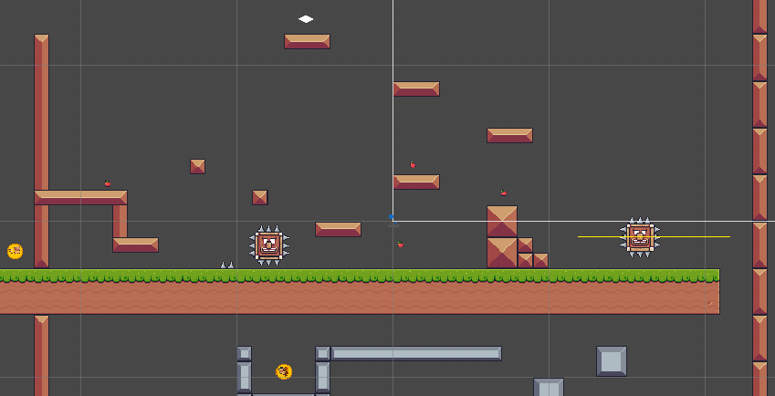
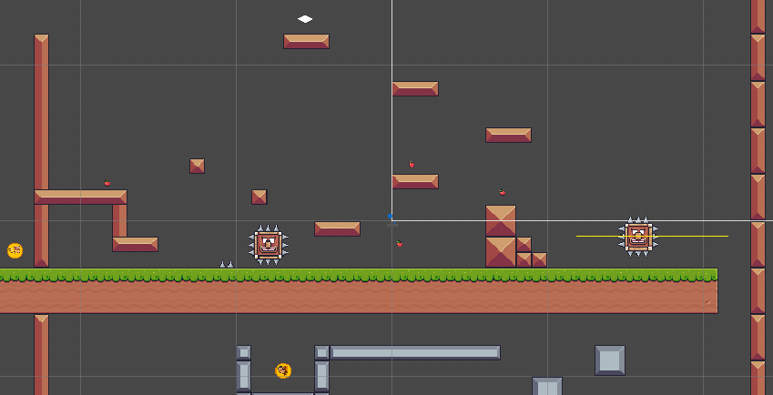
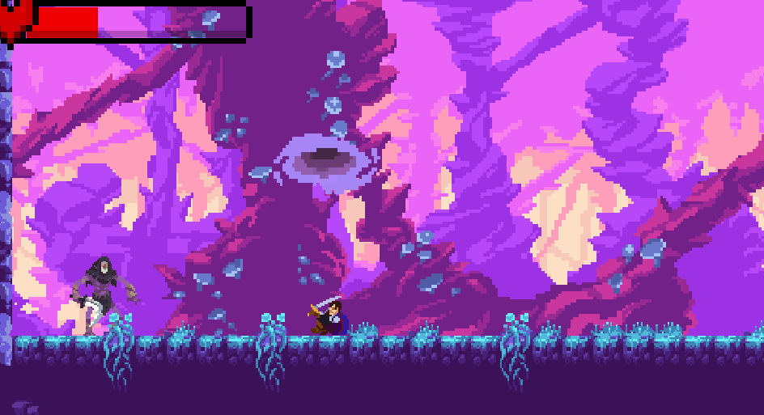
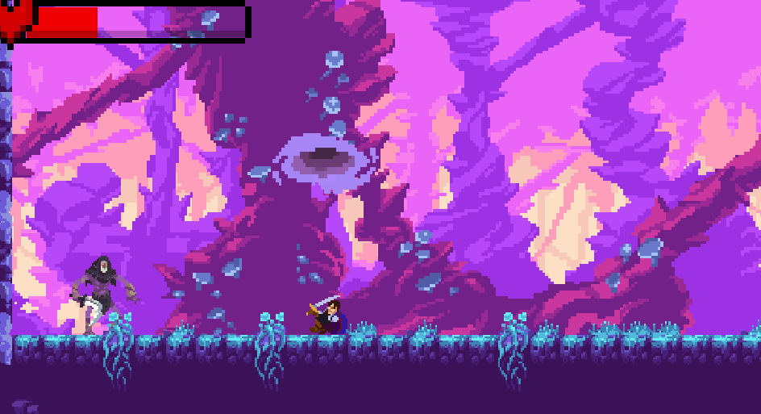

Game Development Projects
Here are some projects I've made in Unity using C#
Basic 2d Sidescroller
One of my first completed game projects, a basic 2d sidescroller with multiple levels
 

2d Metroidvania
A more complicated game, with bosses, fightable enemies, menus and a shop, and weapon upgrade paths
 

3d Adventure Game
My first 3d game, made with lots of shader work, including a reusable terrain shader component, and with a bossfight, collection system, and a fully animated 3d character